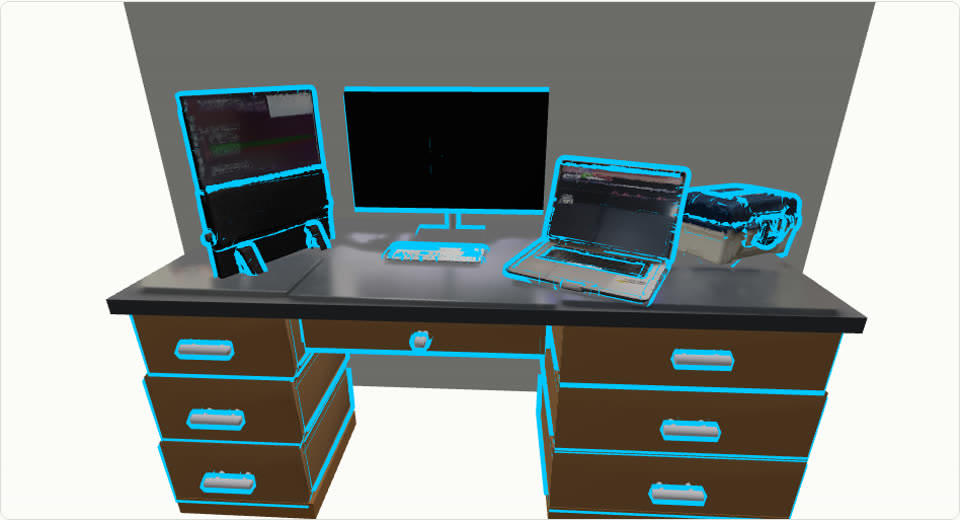
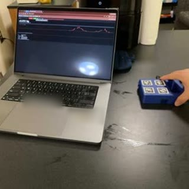
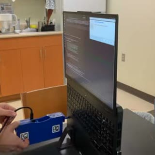
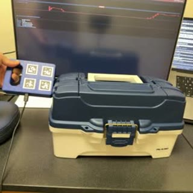
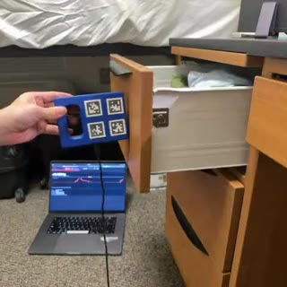
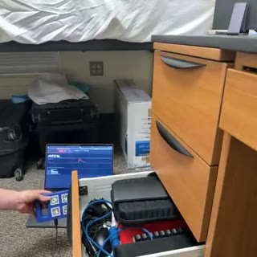
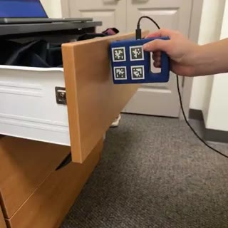
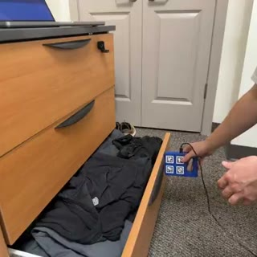

Desk
PokeBot rebuilt this scene from a phone scan. Each object in the tiles below has identified physical values.
Phone scan
Rebuilt scene

 Apple keyboard
Apple keyboard

MacBook
Laptop with two stands
Toolbox Desk monitor
Desk monitor
 Middle desk drawer
Middle desk drawer

Left top desk drawer Left middle desk drawer
Left middle desk drawer

Left bottom desk drawer
Right top desk drawer Right middle desk drawer
Right middle desk drawer

Right bottom desk drawer